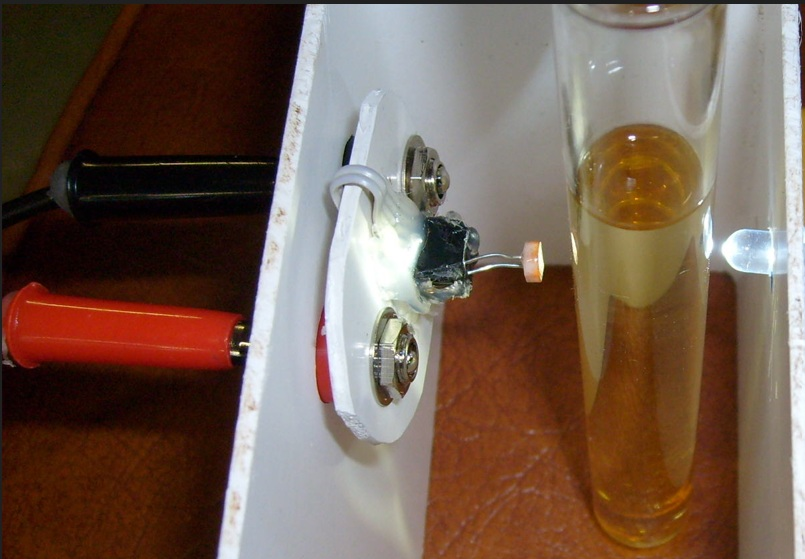
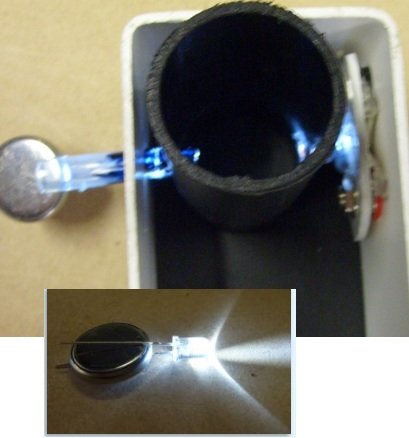
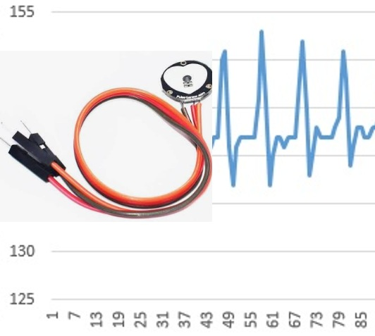
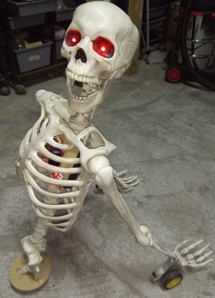
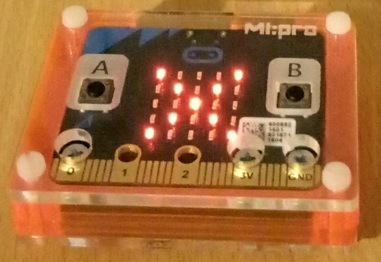

BBC micro:bit V1 and V2
Three sensor channels before you wire anything
← Casio calculator data logger – project overview
For junior classes, a new approach to upcycling old technology and greatly extending the capabilities of a calculator many learners’ older siblings own. DO NOT discard those V1 Microbits or old Casio FX-9750 G Plus calculators - upcycle and transform them into a general purpose tool for physical education, health, science, mathematics, Internet-of-things (IoT), and robotics / instrumentation. Reduce electronic waste at the same time!
The forgotten feature in the 2.5 mm port of a Casio FX-9750 and FX-9860 is now available on my GitHub, open-source and free. It takes the burden off the teacher, because the learners become the experts - constructing, coding and repairing their own smart data logger that also acts as a remote control, a PIN pad, and automation control interface.
This is an extension of my 2008 research, which carried classroom validation and student feedback, now with a modern facelift using all modern microcontrollers, including the micro:bit. Learners can record heart rate, temperature, sound level, and other readings using sensors they build themselves, for cents or a few dollars.
The calculator needs no modification or firmware change. It does not need to know what is on the other end of the cross-over cable.
The BBC micro:bit is the only platform here that logs something real with nothing wired to it. A V1 micro:bit has a die temperature sensor, a button and an accelerometer on the board, so three channels are already there. A class can plot data in the first lesson and build sensors in the second.
V1 and V2 need different answers, because their UARTs differ. The wiring is identical; the code is not interchangeable.
Before you wire anything
Check the wiring of every conductor with a multimeter first. The wire colours inside a bought SB-62 cable may not match the colours in any diagram, including this one. Check the tip, ring and sleeve against your own cable before connecting a calculator.
What you need
- A BBC micro:bit V1 or V2, and an edge connector breakout to reach P8 and P12.
- A calculator: FX-9750G Plus or FX-9750GIII.
- The four interface components below. The micro:bit runs at 3 V, so the 10 kΩ and the Schottky matter here if you use a G Plus.
- The Arduino IDE with micro:bit board support – these builds are C++, not MakeCode.
The interface circuit
Four components, and the same circuit on every platform. It serves both calculator generations and both board supply voltages.

- 1N4148 in the blue wire, band toward the board. This makes the board's output open-drain: it can only pull the line low, and the calculator raises it with its own internal pull-up. That is what lets one cable serve a 5 V board and a 3.3 V one.
- 4.7 kΩ pull-up from the yellow wire to the board's own supply. Both calculators power their port down between transfers, so a board that is listening reads a permanent break without it.
- 10 kΩ in series with the receive pin, and a 1N5711 Schottky from that pin to the board's supply. These matter whenever the board's supply is below the calculator's transmit level – which on this platform means a 3 V micro:bit with an FX-9750G Plus, whose line sits at 4.75 V. On every other combination the Schottky is idle and costs nothing.
The 10 kΩ is in series only. Nothing connects the receive pin to ground. Add a resistor there and it becomes a divider, which drops an FX-9750GIII's 2.75 V mark to about 1.8 V and stops working.
Pins – the same on both boards
| Signal | Edge pin | Note |
|---|---|---|
| To Casio RX – blue, ring, via the 1N4148 | P8 | band toward the micro:bit |
| From Casio TX – yellow, tip | P12 | with the 4.7 kΩ pull-up to 3 V |
| Ground – black, sleeve | GND | connect this one first |
| External sensors | P0, P1, P2 | left free deliberately |
P8 and P12 are chosen, not arbitrary. They are ordinary GPIO that share nothing – not the LED matrix, not the buttons, not I2C. Move the link to a pin the display uses and you will spend an evening finding out why.
The code
| Board | File | Stop bits | How it supplies the idle |
|---|---|---|---|
| micro:bit V1 (nRF51) | Casio-MicrobitV1-NSN.ino | 1, and no way to change it | CASIO_BYTE_GAP_US 250 after each byte |
| micro:bit V2 (nRF52833) | Casio-MicrobitV2-NSN.ino | 2 | STOP_BITS_TO_CASIO 2 |
Both set TURNAROUND_MS 5. On the V2 the turnaround belongs at the head of the write routine, so single-byte sends are covered too; on the V1 it goes once per packet, not per byte.
Sensors you already have
- V1: internal die temperature, button A state, and accelerometer X. Three channels, nothing wired.
- V2: internal channels plus an analogue channel on P0.
- P0, P1 and P2 stay free on both, for the sensors a learner builds.
Three requirements apply to every platform. They are why this works at all, and each of them was found by a link that would not run without it.
- Idle between bytes. An FX-9750G Plus needs roughly one bit period – about 104 µs at 9600 baud – of idle line between one byte and the next. A second stop bit supplies it; so does a deliberate delay. An FX-9750GIII does not care.
- A turnaround delay. About 5 ms before every transmission, so the calculator can switch its port from sending to listening. Without it the calculator answers
0x22and never sends its request packet. - Build the packet, then send it. Nothing computed part-way through a transmission – a checksum between the last two bytes will insert a pause a G Plus refuses.
What goes wrong
A V2 with one stop bit will not talk to an FX-9750G Plus
The V2's UARTE1 transmits by EasyDMA – it is handed the whole packet and clocks it out with no gap between bytes at all. That is exactly the gapless 8N1 stream a G Plus refuses. Setting STOP_BITS_TO_CASIO 2 sets one bit in the peripheral's config register, the DMA stays gapless, and the second stop bit supplies the idle. Nothing else in the send path changes.
A V1 cannot set stop bits at all
The nRF51's UART has no stop-bit field. The V1 build therefore delays deliberately after every byte: one frame time of 1042 µs plus a 250 µs gap. It arrives at the same place by another road, and it is why the V1 works on a G Plus despite sending a single stop bit.
Other things worth knowing
- The pull-up is not optional. Both calculators power their port down between transfers, so a micro:bit that is listening reads a permanent break without it and logs rubbish.
- The calculator must stay connected for the whole run.
- Use the interface circuit with a G Plus. A 3 V micro:bit reading a 4.75 V transmit line without the 10 kΩ puts the current through the chip's own protection diode.
Code, manual and the other platforms
- Repository, all platforms: github.com/MikeFentonNZ/Casio-calculator-datalogger-picaxe-esp-microbit-arduino
- Technical manual – wiring, the full
Receive(sequence, every packet and checksum: https://doi.org/10.5281/zenodo.22095227 - Project overview: Casio calculator data logger – the $10 upgrade
WARNING - TAKE CARE!
NEVER connect mains electricity (240 V / 110 V) to the calculator, to the microcontroller, or to any sensor wiring.
NEVER use mains-connected equipment near water.
Keep every sensor signal within 0 V to 3.3 V. The ESP32 and ESP8266 are not 5 V tolerant. A bare ESP8266 A0 pin reads 0 to 1.0 V only; 3.3 V will destroy it. However, popular development boards like NodeMCU and Wemos D1 Mini include an onboard resistor voltage divider, which safely extends their external board tolerance to 0 to 3.2V–3.3V
Special Warning: DO NOT let students test boiling water.
There is no need to calibrate temperature sensors using boiling water. Where in the real world would a student expect to record that temperature? If you are investigating cooling curves, YOU should safely get sensor readings at 100 °C and PROVIDE THIS to learners.
READ THE DISCLAIMER in the Technical manual - No responsibility is taken for how you use this information! This is a research project provided open-source to educators.
Use it
Always remind learners that scientists and engineers work carefully and safely, no matter what they see in movies or TV.
Sensor Lab: With a breakout adapter, check the in-built temperature sensor against an external temperature sensor. Try inventing your own ultra-low-cost sensors. Anything that changes its electrical resistance due to one environmental factor is a good start. You may need a 10k pull-up resistor - learn about these and what they do. Alternatively, try low cost NTC temperature thermistors, light dependent resistors (LDR). Advanced learners can try DS18B20 temperature sensors, HC-SR04 range-finders, and DHT-11 modules. Build a colorimeter to detect light changes with a LDR and an LED as a light source for chemistry investigations. You do not need a LED to log the change in glow stick brightness over time - does temperature affect this?



NOTE: Use a current limiting resistor on the LED!
Medical Lab: With a breakout adapter, connect a low-cost heart beat sensor, and code the Micro:bit to calculate heart rate. Send this to the Casio FX-9750 to see trends before and after exercise, or see if you can make a lie detector!

Casi II - the 2025 successor to the original Picaxe Casio calculator controlled robot. The Casio sends calculator key presses by micro:bit radio to the robot (see the 2008 E-Learning report https://doi.org/10.5281/zenodo.19302276).

Build a Halloween ‘Creepy R2D2’: A larger fun project for a movie prop - loads of maths, science, and creativity! Press a number on the keypad (or use the letters) to activate voice and sound effects, play specific song tracks, and drive him around!

Mars surface surveyor: Attach a low-cost ultrasonic rangefinder module (Aliexpress) and map a simulated Martian surface from the air (see the 2008 E-Learning report https://doi.org/10.5281/zenodo.19302276).


Over distance. Use the Bluetooth or radio functions; send data to the Casio and to another remote device using BT or radio. Alternatively, use a second microbit as a remote sensor unit to radio to the Casio micro:bit.

A renewed justification in a post AI-era.
When technology cost and availability is no longer a consideration, the use of simulated data for STEM learning is a decision that now requires justification, rather than being the default.
The original case for this work was equity: timed data logging for a few dollars instead of hundreds. There is now a second reason it matters. As generative AI is trained on a scientific literature increasingly polluted by fabricated paper mill studies (Richardson and Amaral, 2025, PNAS), simulated datasets can no longer be assumed to reflect physical reality. Subverting the Casio serial protocol so learners can gather their own first-hand measurements gives them data whose provenance is transparent and which can still surprise. The exploit is no longer only about cost; it is about preserving access to real, trustworthy observation.
Other platform build guides: PICAXE · ESP8266 · ESP32 · Arduino Uno · Casio calculator Hasbro Smart R2D2 DroidX app